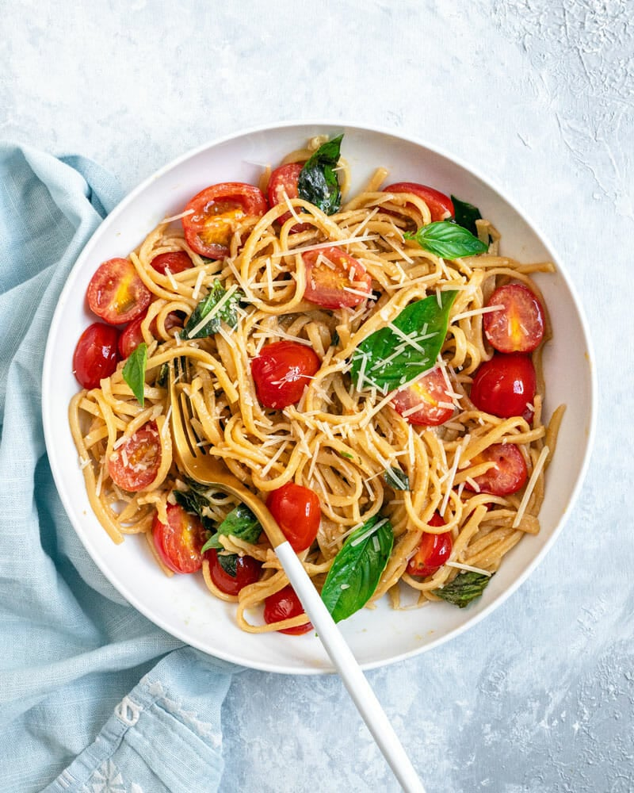

<p>recipe-list works!</p>
<a routerLink="/form-field">Aller au formulaire</a>

  <mat-card  *ngFor="let recipe of recipes">
    <mat-card-header>
      <mat-card-title>
        {{ recipe.name }}
      </mat-card-title>
      <mat-card-subtitle>
        {{ recipe.description }}
      </mat-card-subtitle>
    </mat-card-header>
    
    <mat-card-content>
      {{ recipe.ingredients }}
    </mat-card-content>
    <mat-card-actions>
      <button mat-button>Instructions</button>
      <button mat-button>Action 2</button>
    </mat-card-actions>
  </mat-card>
 